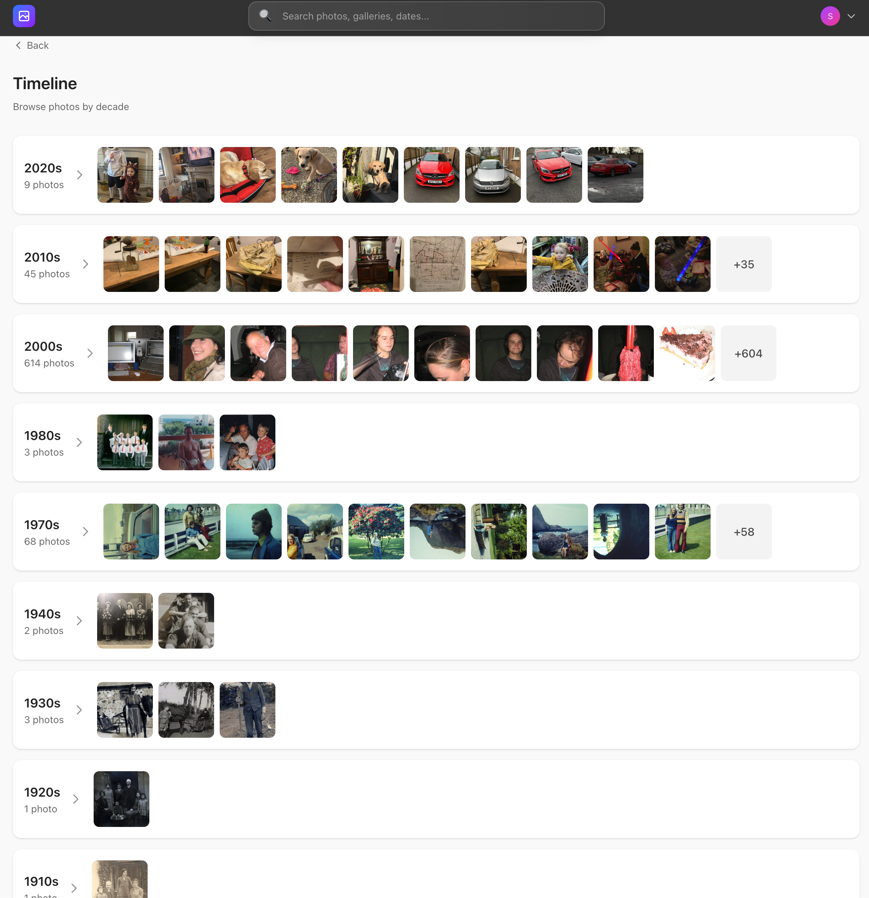
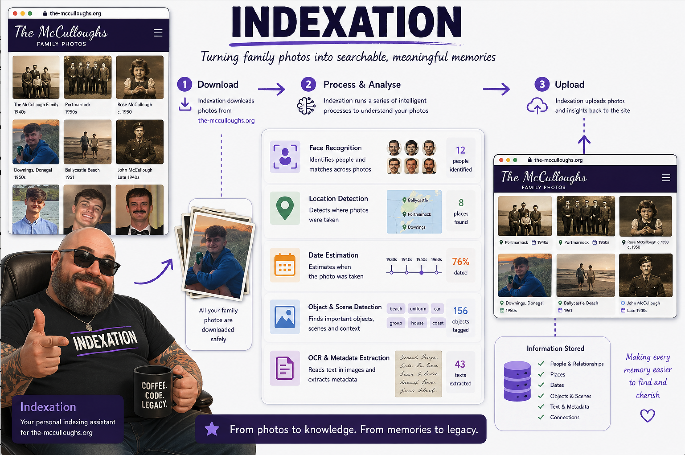
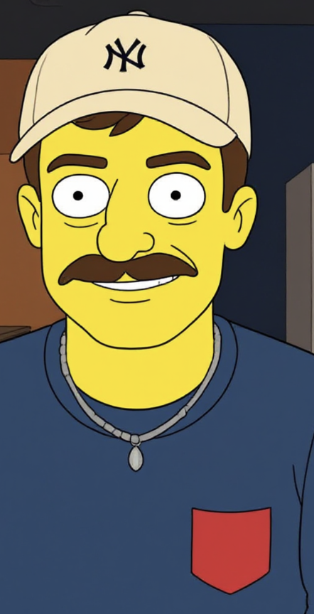
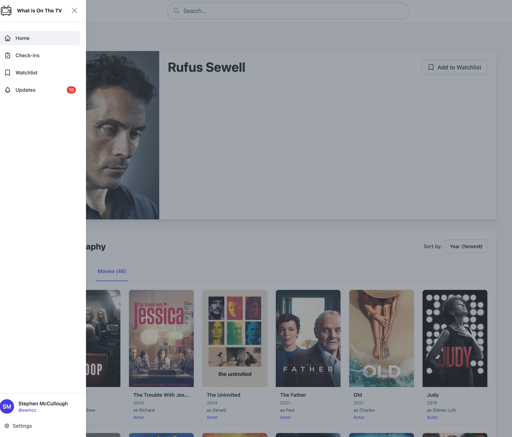
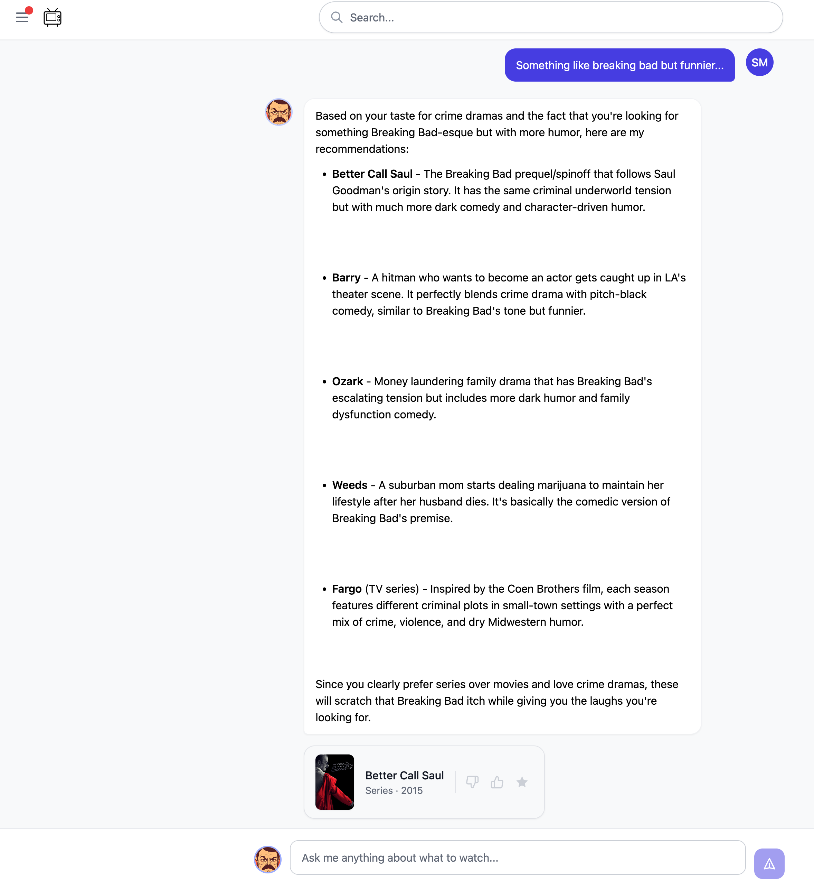
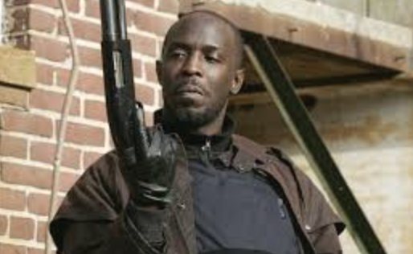

I use AI to help me build things
Not at work. On the side. Personal projects and small hustles where I am the only engineer.
the-mcculloughs.org
Family photo archive. 1910 to now. On my own infrastructure.
whatisonthe.tv
Track what you watch. No algorithm, no platform. On my own infrastructure.
AI does not write my code for me. It lets me move at a pace I could not manage alone.
the-mcculloughs.org
A private family photo gallery. 1910 to 2026. On infrastructure I control.

Timeline by decade
indexatron
Can a local model organise thousands of family photos without touching the cloud?


Hypothesis
Confirmed
Models running locally
Ollama
LLaVA 7b
nomic-embed-text
Context injected into the prompt beats blind inference.
LLaVA 7b outperforms Llama 3.2 Vision for structured JSON.
No cloud. No API. Runs on my machine.
whatisonthe.tv
Track what you watch. Browse by actor. On my own infrastructure.
whatisonthe.tv
Actor filmography. AI recommendations. Ask it anything.

Browse by actor, genre, and more

AI recommendations
I.F.F
Putting The Wire
on the Graph
Five seasons. One graph. What actually changes.
Stephen McCullough
·
April 2026
What is The Wire?
S1
The Street
West Baltimore drug trade
S1
The Police
Baltimore PD, the stats game
S2
The Docks
Stevedores, a dying industry
S3
City Hall
Politics, ambition, compromise
S4
The Schools
Four kids, the system
S5
The Press
The Sun, the newsroom, the narrative
Five seasons. Five institutions. One graph.
Who wins the game?
Place your bet. Each one looks like the answer until the show takes it back.
Avon
The Kingpin
Ran the West Side. Inside by S3.
Stringer
The Operator
Almost legit. Killed first.
Marlo
The Heir
Took the city. Forced into a suit.
McNulty
The Detective
Closed the cases. Pushed out.
Carcetti
The Mayor
Won on reform. Traded it.
Nobody?
The Easy Answer
Tempting. Not quite right.
Who wins on screen, and who wins in the structure.
I modelled it as a graph
Four node types. Ten relationship types. One graph that moves through five seasons.
22
People
Avon · Stringer · Omar · McNulty
7
Organisations
Barksdale · BPD · City Hall
4
Roles
Kingpin · Predator · Detective
4
Games
Drug · Police · Political · School
Relationships
10 types · 67 edges
LEADS
WORKS_FOR
MEMBER_OF
INVESTIGATES
TARGETS
INFORMS
OCCUPIES_ROLE
PLAYS_GAME
EXPOSED_TO
CONNECTED_TO
Time
every edge carries season_start and season_end
S1
S2
S3
S4
S5
Before this talk: the actual experiment
Five seasons of dialogue, parsed, attributed, and modelled before any of these slides existed.
1
Raw transcripts
All 5 seasons, scene by scene, line by line
2
AI speaker ID
Attribute every line, infer relationships, normalise names
3
Neo4j
Cypher queries, centrality, community detection
4
Static export
wire-graph.json drives this talk and the explorer
5Seasons
60Episodes
38Nodes
86Edges
6Succession rules
Same graph, different active relationships
Every edge carries its own season range. The seasons just ask which edges are live right now.
McNultyINVESTIGATESBarksdale
McNultyINVESTIGATESStanfield
// data shape · wire-graph.json
{
"source": "stringer_bell",
"target": "barksdale_org",
"label": "LEADS",
"season_start": 2,
"season_end": 3
}
Nodes persist across every season
Edges switch on and off by season range
Roles get reoccupied as people move
The game is not only the street
Drug Trade
PLAYS_GAME
Barksdale · Stanfield · Omar
Police Stats
PLAYS_GAME
Baltimore PD · CompStat
Politics
PLAYS_GAME
City Hall · Carcetti · Clay Davis
Schools
PLAYS_GAME
Tilghman Middle · Season 4
The Docks
PLAYS_GAME
Stevedores Union · Season 2
The Graph
Open graph explorer
graph.html
↗
What happens if Avon is removed?
Before
Avon LEADS Barksdale Org
Stringer WORKS_FOR Avon
Barksdale Org INVESTIGATES ← Police
After
Stringer LEADS Barksdale Org
Barksdale Org INVESTIGATES ← Police
Role reoccupied. Game carries on.
What the graph actually says (Season 2 · live from wire-graph.json)
Largest connected component
23 → 22
graph holds
Barksdale Org betweenness
0.21 → 0.17
−19%
Top kingpin centrality
Avon → Stringer
rank 1 reoccupied
Drug Trade game
active
unchanged
It does not stay the same
What changes locally
Leadership changes.
Relationships shift.
The organisation adapts.
What persists
The game carries on.
People change. Roles get reoccupied.
Two people, one role

Omar
→
Outside Predator
S1–S5
Michael
→
Outside Predator
S5
McNulty
→
Rule-Bending Detective
S1–S5
Sydnor
→
Rule-Bending Detective
S5
One person, three roles
Slim Charles
Enforcer
Barksdale
S2–S3
→
Operator
Eastern / Co-Op
S4–S5
→
Kingpin
New Day Co-Op
S5
The kingpin is not the most important node
Take out Avon, the graph reorganises. Take out Prop Joe, the drug trade fragments.
Avon Barksdale
Kingpin · S1–S3
Degree (S2)
4
Betweenness
0.04
Removed → component
23 → 22
Successor available
Stringer
Degree (S3)
5
Betweenness
0.31
Removed → component
23 → 19
Co-Op
disbands
The graph names the broker the show calls a side character.
Some stop. Some just find a different game.
Namond might.
Stopped playing
Namond
Bubbles
Cutty
Poot
Changed arenas
Carcetti
Governor race
Rawls
State Police
The Game carried on
Kingpin reoccupied
Outside Predator reoccupied
Stats game unchanged
Won. Still couldn't leave.
Marlo won the drug trade. Got forced into a suit by Levy. Last scene: corner at night, alone. The game called him back.
Namond didn't win the game. He stopped playing it.
Carcetti and Rawls didn't stop. They found a bigger table.
The game carried on regardless.
Different arenas, same pattern
Same shape across all five seasons. Different scoreboard each time.
The Street
Drug Trade Game
The Police
Police Stats Game
The Docks
Dock Survival Game
The Schools
School System Game
This is the same shape as your system
The Wire just makes the pattern visible. Most production systems behave the same way.
Org chart
A VP leaves. The reporting lines redraw. The function continues.
Microservices
A service is deprecated. Calls reroute. The capability persists.
Supply chain
A vendor folds. A different supplier reoccupies the slot. The product still ships.
Customer base
A flagship account churns. Spend redistributes. The market reshapes around it.
The graph reorganises. The role gets reoccupied.
Or it doesn't, and the graph tells you which.
Who wins the game?
People win moments.
Some people get out.
Most roles get reoccupied.
The game carries on.
Why graphs matter
remove
avon_barksdale
change_edge
stringer_bell
LEADS
barksdale_org
set_season
3
→ observe what actually changes
That is the small connection back to Collective Engine: model the system once, then poke it and see what changes.
Remember...
I.F.F